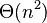

奇偶排序

使用奇偶排序法对一列随机数字进行排序的过程
|
| 分类 |
排序算法 |
| 数据结构 |
数组 |
| 最差时间复杂度 |
 |
|
|
奇偶排序，或奇偶换位排序，或砖排序[1]，是一种相对简单的排序算法，最初发明用于有本地互连的并行计算。这是与冒泡排序特点类似的一种比较排序。
该算法中，通过比较数组中相邻的（奇-偶）位置数字对，如果该奇偶对是错误的顺序（第一个大于第二个），则交换。下一步重复该操作，但针对所有的（偶-奇）位置数字对。如此交替进行下去。
目录
[]
- 1 处理器数组的排序
- 2 Batcher奇偶归并排序
- 3 算法
- 4 参考文献
处理器数组的排序[]
在并行计算排序中，每个处理器对应处理一个值，并仅有与左右邻居的本地互连。所有处理器可同时与邻居进行比较、交换操作，交替以奇-偶、偶-奇的顺序。该算法由Habermann在1972年最初发表并展现了在并行处理上的效率。[2]
该算法可以有效地延伸到每个处理器拥有多个值的情况。在Baudet–Stevenson奇偶合并分区算法中，每个处理器在每一步对自己所拥有的子数组进行排序，然后与邻居执行合并分区或换位合并。[3]
Batcher奇偶归并排序[]
Batcher奇偶归并排序是一种相关但更有效率的排序算法，采用比较-交换和完美-洗牌操作。[4]
Batcher的方法在拥有广泛互连的并行计算处理器上效率不错。[5]
算法[]
以下表现其单处理器算法，类似冒泡排序，较为简单但效率并不特别高。
Python语言：
# 假设已有列表a等待排序
while True:
sorted = True
# 处理奇-偶对
for i in xrange(1, len(a)-1, 2):
if a[i] > a[i+1]:
a[i], a[i+1] = a[i+1], a[i] # 交换
sorted = False
# 处理偶-奇对
for i in xrange(0, len(a)-1, 2):
if a[i] > a[i+1]:
a[i], a[i+1] = a[i+1], a[i] # 交换
sorted = False
if sorted:
break
JavaScript语言：
/* 假设已有数组a等待排序*/
var sorted = false;
while(!sorted)
{
sorted=true;
for(var i = 1; i < list.length-1; i += 2)
{
if(a[i] > a[i+1])
{
swap(a, i, i+1);
sorted = false;
}
}
for(var i = 0; i < list.length-1; i += 2)
{
if(a[i] > a[i+1])
{
swap(a, i, i+1);
sorted = false;
}
}
}